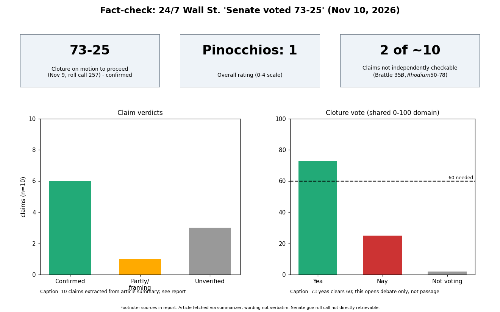

The core claim is correct: the Senate voted 73-25 on Nov 9, 2026 to invoke cloture on the motion to proceed to H.R. 2347, the vehicle for the Bipartisan American Affordability and Jobs Act (roll call 257). The article itself states that nothing has passed. Rating: 1 Pinocchio, driven by an unverifiable pair of estimates and a headline that reads as if data centers already "pay their own bills".
| Claim | Verdict | Source |
|---|---|---|
| 73-25 cloture vote on Nov 9, motion to proceed; passes nothing | Confirmed | OPB, Spokesman-Review/Reuters, mGrid |
| Clears 60-vote threshold | Confirmed | same |
| Bill requires data centers to cover grid upgrade costs | Confirmed in general terms (Sec. 2107, FERC rulemaking in 90 days per one report); "bars passing costs to others" unverified | mGrid, Heinrich quote in OPB |
| Trump "BIG WIN"; "will not approve wind turbines" | Confirmed | OPB |
| Cortez Masto will oppose final passage unless provisions removed | Confirmed (provision is NHPA-related) | mGrid, Reuters |
| Jeffries: bill falls short | Confirmed (his office; he said "still under review") | OPB, search results |
| XLU $43.79, +1.53%; GRID +$6.72 to $160.93 | Not checked precisely; XLU near 43.1-43.7 in neighboring dates, consistent | Fox Business, Benzinga quotes |
| Brattle $35B; Rhodium $50-78 | Not checkable here | none found |
| NEPA 150 days vs six years; FERC 230 kV after a year; financial guarantees | Not checkable here (bill text not retrieved) | none |
| Article admits no source ties XLU move to the vote | Appropriately hedged | article |
Confidence: high on the vote and political statements; low on estimates and statutory details.